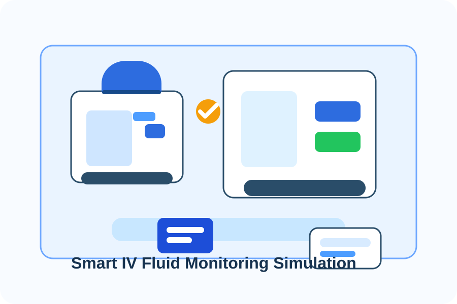

Project Report
Detailed documentation covering the project background, objectives, implementation review, and overall findings.
Download ReportEngineering Project • Healthcare Innovation
A smart, reliable solution designed to improve intravenous fluid monitoring, support patient safety, and streamline clinical oversight through real-time data and automated alerts.
Project Overview
The Smart IV Fluid Monitoring System focuses on enhancing patient care by combining practical monitoring technology with clear documentation and system design principles. The solution supports safer fluid administration and helps healthcare professionals respond quickly to changing conditions.
From concept to implementation planning, the project provides a complete framework for understanding the system’s purpose, functional requirements, and expected impact on healthcare delivery.
Abstract
There is a known inadequacy of healthcare workers in hospitals and health centres around Uganda. In these resource-limited settings, monitoring intravenous (IV) fluid therapy remains a manual and time-consuming task for nurses who must frequently move between patients to visually check fluid levels. Conventional IV stands provide no early warning before a bag runs empty, creating preventable safety risks and unnecessary workload. This project presents the Smart IV Fluid Monitoring System, a low-cost embedded prototype built around an ESP32 microcontroller, a load cell via HX711, an LCD display, and colour-coded LEDs. It continuously tracks fluid status as Normal, Low, or Critical and provides automated alerts to improve patient safety.

Contributors
This project was developed by Group 20 as part of the CSC 1304 Practical Skills Development course.
Mentor: Dr. Lillian Muyama
Downloadable Documents
Detailed documentation covering the project background, objectives, implementation review, and overall findings.
Download ReportThe Software Requirements Specification outlining system requirements, functional expectations, and design considerations.
Download SRS